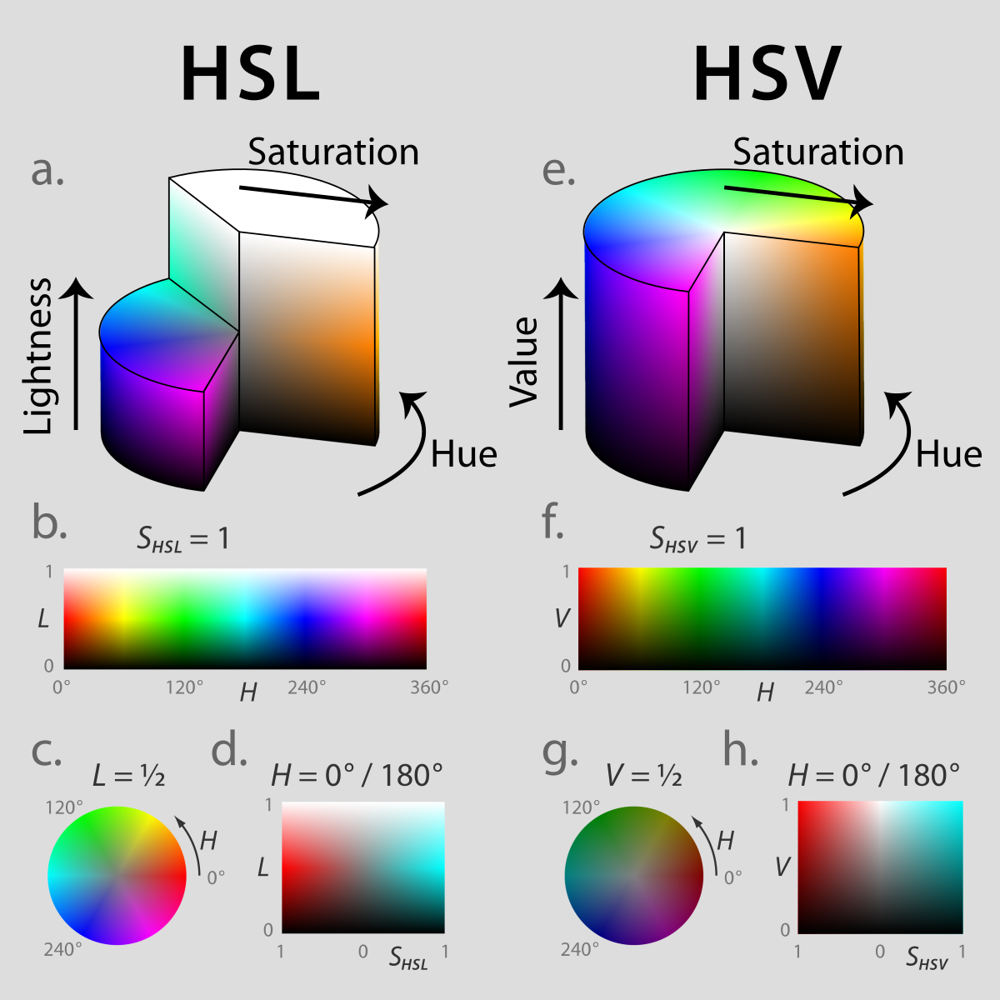

H S V
(0, 0%, 0%)
Experimental
Instrumental
H-Influence:
Sheperd Tone
2 sawtooth oscillators
Piano
c3 major cale
S-Influence:
Experimental
- filter noise volume
E-Guitar Open
chords in c2 major scale
V-Influence:
Experimental
- filter noise frequency
Pan
left / right
- on / off